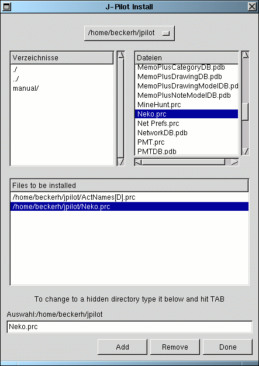

JPilot ist in der Lage, neue Anwendungen auf dem PalmPilot zu installieren. Rufen Sie dazu den Installationsdialog auf, indem Sie den Menueintrag File-Install anwählen.

Die Dateien, die Sie hier auswählen werden beim nächsten HotSync auf dem PalmPilot installiert. JPilot legt lediglich einen Verweis auf die Datei an, nimmt keine Kopie vor. Daher sollten Sie die Datei bis zum nächsten HotSync nicht löschen oder in ein anderes Verzeichnis verschieben.
Um eine Datei zu Installation auszuwählen, durchsuchen Sie anhand der oberen beiden Listen die in Frage kommenden Verzeichnisse. Sie können die gefundenen Dateien in die untere Liste der zu installierenden Programme übertragen, indem Sie die Datei doppelklicken oder anhand des Buttons ,,Add`` übertragen.
Einmal auf diese Weise ausgewählt tauchen die Dateien (bzw. der Verweis auf diese) in der Liste ,,Files to be Installed`` auf. Von dort können Sie Einträge löschen, wenn Sie den Eintrag anwählen und dann den Button ,,Remove`` drücken.
Wenn Sie Ihre Auswahl getroffen haben, drücken Sie den Button ,,Done``. Das Installationsfenster schließt sich. Die gewählten Dateien werden beim nächsten HotSync installiert und stehen Ihnen dann auf dem PalmPilot zur Verfügung.